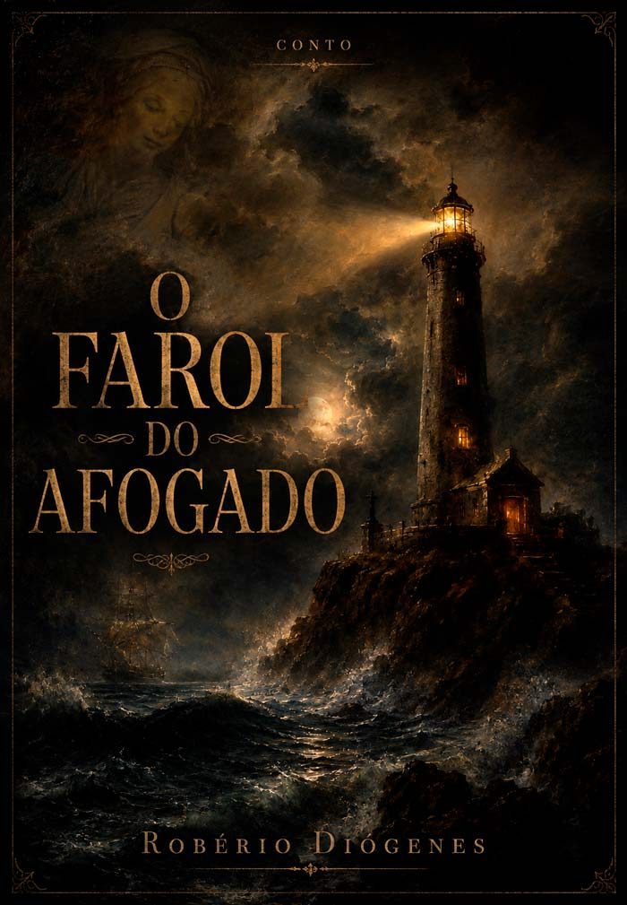

O Farol
do Afogado
"O amor que atravessa o tempo não é recompensa. É sentença."
Sobre o conto
Lívia acorda há catorze anos com a língua seca e o mesmo sonho: um farol de pedra cor de osso, erguido sobre uma rocha que o mar rói com paciência secular. E um homem na água — não flutuando, mas dentro dela, com o cabelo espalhado como uma auréola escura — chamando seu nome numa língua que os ossos lembram mas a mente não alcança.
Ela acorda. Bebe água. Passa a mão no rosto. Apaga o quadro-negro. Quatorze anos assim.
Quando Daniel entra no arquivo municipal com o formulário errado na mão, sabe coisas que não deveria saber — a cicatriz em formato de lua no pulso esquerdo, o domingo chuvoso, a frase que a avó morta repetia. O que começa como um encontro improvável se transforma na descoberta de que eles são a mesma história contada em vidas diferentes.
E que no alto do farol desativado há quarenta anos, gravada na pedra em língua que ninguém mais fala, uma promessa ainda espera ser respondida.
Trecho de abertura
Havia um farol. Não aquele tipo de farol alegre dos cartões postais, pintado de listras vermelhas e brancas, com a luz girando como um convite. Era um farol escuro, de pedra cor de osso, erguido sobre uma rocha que o mar royia com paciência secular. A luz no alto não girava — pulsava. Como um coração. Como algo que ainda não decidira se queria continuar.
A promessa não é uma prisão. É uma pergunta. E toda pergunta tem uma resposta.
Estrutura
Para você que vai ler
O Farol do Afogado é para quem gosta de histórias que ficam. Não pelo susto — pela pergunta que o epílogo deixa sem responder: a promessa foi cumprida, ou ainda aguarda?
É um conto de horror que não usa o horror como fim em si mesmo — usa como lente para falar sobre amor, culpa, memória e a possibilidade de que algumas histórias não cabem numa só vida para serem contadas.
Leva cerca de 25 minutos para ler. Talvez mais, se você quiser pausar na última frase antes de virar a página.